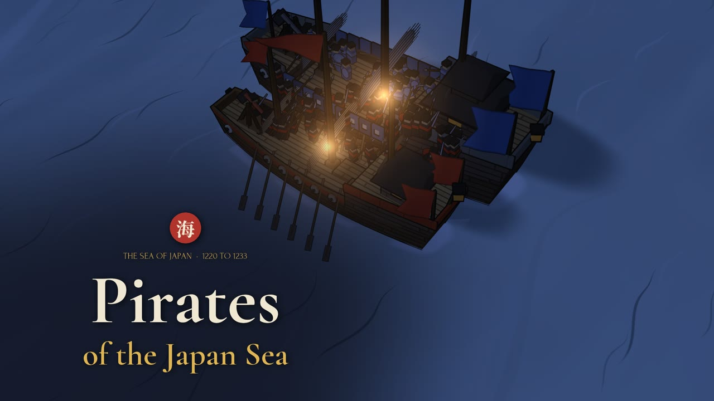

72 часа заканчиваются в понедельник в 18:30 по Владивостоку. Обе игры сданы. Это последний из трёх постов (день 1, день 2) и самый короткий: в третий день работа перестала быть про то, как сделать игры, и стала про то, как донести их до людей.
У каждой игры теперь свой трейлер, снятый на сборках понедельника.


Пираты Японского моря
У пиратской игры новое русское имя: раньше она называлась «Железная джонка», теперь «Пираты Японского моря», как и по-английски.
В ночь на понедельник он сыграл в неё дважды и оба раза бросил обучение. В первый раз было слишком много текста. Во второй урок сказал «победи пирата», а он не смог понять, какой из кораблей пират. Заметки были короткими: «меньше текста, больше значков и красоты».
Теперь у каждого корабля на воде есть цвет: зелёный у своих, жёлтый у нейтральных, красный у тех, кто хочет вашей смерти. Карточки уроков по одному предложению, с печатью и штампом, когда шаг пройден. Строки в городе стали рисунком, названием и ценой.
Потом он спросил, зачем нужны призы. Теперь взятый корабль становится частью вашего флота. Каждый стоит жалованья, на него можно поставить офицера, а если денег нет, его можно поставить на прикол в своей бухте.
Последнее, что ему не понравилось, — край мира. Там, где подробный берег встречался с грубой картой всего моря, был виден шов. Его решение: дальняя земля должна стать чем-то другим. Неразведанные берега теперь нарисованы как рукописная карта: бумага, тушь, горизонтали на сопках.
Правый руль: Зелёный угол
Обучение он назвал главной задачей дня и сам расписал, каким оно должно быть. Теперь игра начинается в порту, с пустым экраном и остановленными часами. Приходит первый пароход, вы по одной сгоняете машины с аппарели, а части интерфейса появляются по одной, когда они нужны.
В браузере меню оказались телефонными, «огромными», а после исправления текст стал «очень-очень мелким». Теперь есть отдельная раскладка для компьютера. И третье место, куда тратить деньги: свой дом на берегу Амурского залива, который за семнадцать лет вырастает из съёмной комнаты в дом у моря.
И теперь это продукт. Первая площадка бесплатно. Остальное одной покупкой, без рекламы. Цену он назначил тремя словами: «4usd it is». Потом купил игру на своём телефоне, чтобы проверить, что всё работает, и сказал «Lets Go».
Где машина ошиблась сегодня
- Она написала обучение, которое никто не смог пройти. Все проверки прошли. Только человек заметил, что пират выглядит как все остальные.
- Она отправила владельцев iPhone искать игру в Google Play. На одном скриншоте для Apple осталась строчка из набора для Play. Поймали до проверки.
- Она сломала свою же сборку для Android, упаковав заставку дважды, и инструмент подписи отказался принимать файл.
- Пропала земля. После визита домой площадка и порт рисовались без земли под ними.
- Она всё ещё пишет слишком много. И в первый, и в третий день заметка человека была одна: меньше слов.
Семьдесят два часа в цифрах
- Строк кода, написанных человеком: ноль.
- «Пираты Японского моря»: 105 сохранённых версий, около 22 400 строк кода игры, 24 проверки.
- «Правый руль: Зелёный угол»: сборка 60, 164 модели машин, семнадцать лет, русский и английский.
- Трейлеров: два для игр и два для хакатона.
Поиграть
«Пираты Японского моря», для компьютера с клавиатурой и мышью:
- itch.io, бесплатно в браузере
- MyIndie, страница хакатона
- Epic Games Store: страница магазина в работе
«Правый руль: Зелёный угол», для телефона или компьютера:
- Google Play, первая площадка бесплатно, полная игра одной покупкой
- iPhone: открытая бета в TestFlight, пока версия для App Store ждёт отправки на проверку
- itch.io, первая площадка в браузере
- MyIndie, страница хакатона
Судьи оценивают работы до 26 ноября. Что бы они ни решили, обе игры продолжаются, и цель с первого дня не изменилась: выпустить обе как следует, на стольких площадках, сколько их возьмёт.
Мы делаем игры открыто и меняем их по тому, что нам говорят, и эти три поста тому доказательство. Если в какой-то из игр что-то не так, напишите нам: contact@goldenharbourgames.com.